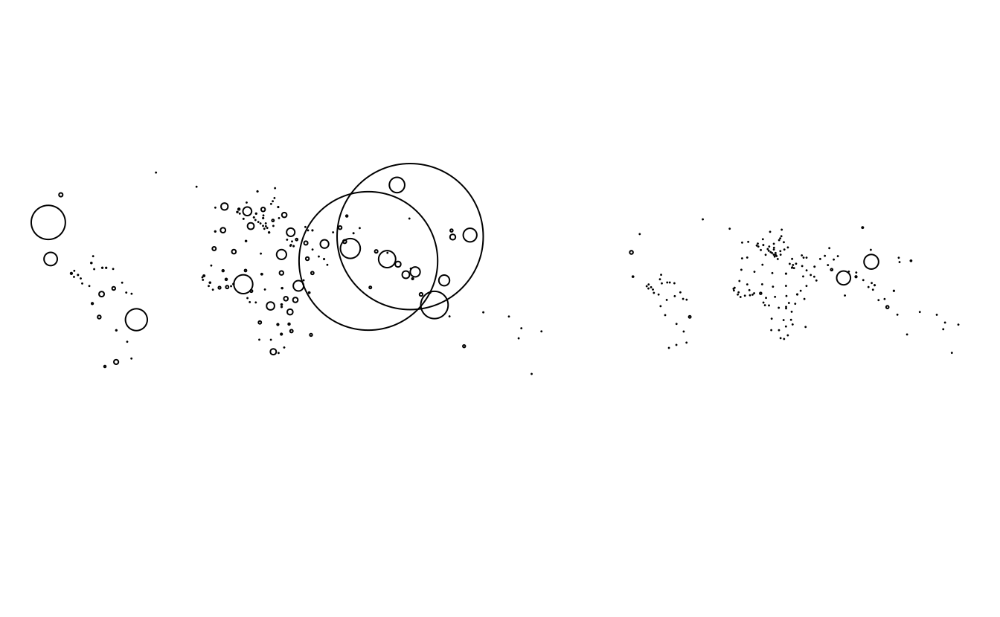
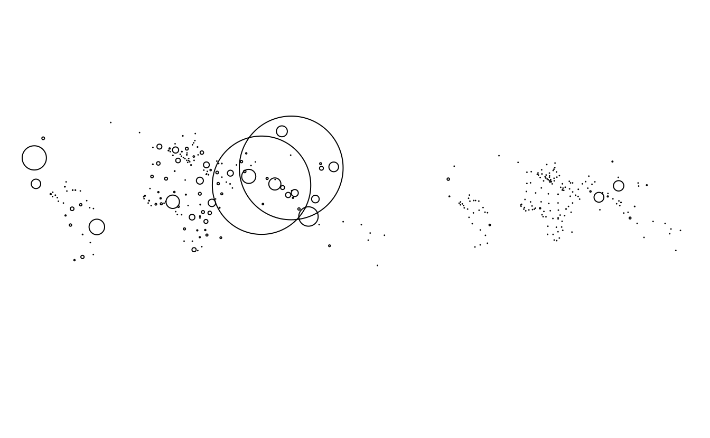

2 Geographic data in R
E1. Use summary() on the geometry column of the world data object that is included in the spData package. What does the output tell us about:
- Its geometry type?
- The number of countries?
- Its coordinate reference system (CRS)?
summary(world)
#> iso_a2 name_long continent region_un
#> Length:177 Length:177 Length:177 Length:177
#> Class :character Class :character Class :character Class :character
#> Mode :character Mode :character Mode :character Mode :character
#>
#>
#>
#>
#> subregion type area_km2 pop
#> Length:177 Length:177 Min. : 2417 Min. :5.63e+04
#> Class :character Class :character 1st Qu.: 46185 1st Qu.:3.75e+06
#> Mode :character Mode :character Median : 185004 Median :1.04e+07
#> Mean : 832558 Mean :4.28e+07
#> 3rd Qu.: 621860 3rd Qu.:3.07e+07
#> Max. :17018507 Max. :1.36e+09
#> NA's :10
#> lifeExp gdpPercap geom
#> Min. :50.6 Min. : 597 MULTIPOLYGON :177
#> 1st Qu.:65.0 1st Qu.: 3752 epsg:4326 : 0
#> Median :72.9 Median : 10734 +proj=long...: 0
#> Mean :70.9 Mean : 17106
#> 3rd Qu.:76.8 3rd Qu.: 24233
#> Max. :83.6 Max. :120860
#> NA's :10 NA's :17
# - Its geometry type?
# multipolygon
# - The number of countries?
# 177
# - Its coordinate reference system (CRS)?
# epsg:4326E2. Run the code that ‘generated’ the map of the world in Section 2.2.3 (Basic map making). Find two similarities and two differences between the image on your computer and that in the book.
- What does the
cexargument do (see?plot)? - Why was
cexset to thesqrt(world$pop) / 10000? - Bonus: experiment with different ways to visualize the global population.
plot(world["continent"], reset = FALSE)
cex = sqrt(world$pop) / 10000
world_cents = st_centroid(world, of_largest = TRUE)
#> Warning: st_centroid assumes attributes are constant over geometries
plot(st_geometry(world_cents), add = TRUE, cex = cex)
# - What does the `cex` argument do (see `?plot`)?
# It specifies the size of the circles
# - Why was `cex` set to the `sqrt(world$pop) / 10000`?
# So the circles would be visible for small countries but not too large for large countries, also because area increases as a linear function of the square route of the diameter defined by `cex`
# - Bonus: experiment with different ways to visualize the global population.
plot(st_geometry(world_cents), cex = world$pop / 1e9)
plot(st_geometry(world_cents), cex = world$pop / 1e8)
plot(world["pop"])
plot(world["pop"], logz = TRUE)
# Similarities: global extent, colorscheme, relative size of circles
#
# Differences: projection (Antarctica is much smaller for example), graticules, location of points in the countries.
#
# To understand these differences read-over, run, and experiment with different argument values in this script: https://github.com/geocompx/geocompr/raw/main/code/02-contpop.R
#
# `cex` refers to the diameter of symbols plotted, as explained by the help page `?graphics::points`. It is an acronym for 'Chacter symbol EXpansion'.
# It was set to the square route of the population divided by 10,000 because a) otherwise the symbols would not fit on the map and b) to make circle area proportional to population. 

E3. Use plot() to create maps of Nigeria in context (see Section 2.2.3).
- Adjust the
lwd,colandexpandBBarguments ofplot(). - Challenge: read the documentation of
text()and annotate the map.
nigeria = world[world$name_long == "Nigeria", ]
plot(st_geometry(nigeria), expandBB = c(0, 0.2, 0.1, 1), col = "gray", lwd = 3)
plot(world[0], add = TRUE)
world_coords = st_coordinates(world_cents)
text(world_coords, world$iso_a2)
# Alternative answer:
nigeria = world[world$name_long == "Nigeria", ]
africa = world[world$continent == "Africa", ]
plot(st_geometry(nigeria), col = "white", lwd = 3, main = "Nigeria in context", border = "lightgrey", expandBB = c(0.5, 0.2, 0.5, 0.2))
plot(st_geometry(world), lty = 3, add = TRUE, border = "grey")
plot(st_geometry(nigeria), col = "yellow", add = TRUE, border = "darkgrey")
a = africa[grepl("Niger", africa$name_long), ]
ncentre = st_centroid(a)
#> Warning: st_centroid assumes attributes are constant over geometries
ncentre_num = st_coordinates(ncentre)
text(x = ncentre_num[, 1], y = ncentre_num[, 2], labels = a$name_long)

E4. Create an empty SpatRaster object called my_raster with 10 columns and 10 rows.
Assign random values between 0 and 10 to the new raster and plot it.
my_raster = rast(ncol = 10, nrow = 10,
vals = sample(0:10, size = 10 * 10, replace = TRUE))
plot(my_raster)
E5. Read-in the raster/nlcd.tif file from the spDataLarge package.
What kind of information can you get about the properties of this file?
nlcd = rast(system.file("raster/nlcd.tif", package = "spDataLarge"))
dim(nlcd) # dimensions
#> [1] 1359 1073 1
res(nlcd) # resolution
#> [1] 31.5 31.5
ext(nlcd) # extent
#> SpatExtent : 301903.344386758, 335735.354381954, 4111244.46098842, 4154086.47216415 (xmin, xmax, ymin, ymax)
nlyr(nlcd) # number of layers
#> [1] 1
cat(crs(nlcd)) # CRS
#> PROJCRS["NAD83 / UTM zone 12N",
#> BASEGEOGCRS["NAD83",
#> DATUM["North American Datum 1983",
#> ELLIPSOID["GRS 1980",6378137,298.257222101,
#> LENGTHUNIT["metre",1]]],
#> PRIMEM["Greenwich",0,
#> ANGLEUNIT["degree",0.0174532925199433]],
#> ID["EPSG",4269]],
#> CONVERSION["UTM zone 12N",
#> METHOD["Transverse Mercator",
#> ID["EPSG",9807]],
#> PARAMETER["Latitude of natural origin",0,
#> ANGLEUNIT["degree",0.0174532925199433],
#> ID["EPSG",8801]],
#> PARAMETER["Longitude of natural origin",-111,
#> ANGLEUNIT["degree",0.0174532925199433],
#> ID["EPSG",8802]],
#> PARAMETER["Scale factor at natural origin",0.9996,
#> SCALEUNIT["unity",1],
#> ID["EPSG",8805]],
#> PARAMETER["False easting",500000,
#> LENGTHUNIT["metre",1],
#> ID["EPSG",8806]],
#> PARAMETER["False northing",0,
#> LENGTHUNIT["metre",1],
#> ID["EPSG",8807]]],
#> CS[Cartesian,2],
#> AXIS["(E)",east,
#> ORDER[1],
#> LENGTHUNIT["metre",1]],
#> AXIS["(N)",north,
#> ORDER[2],
#> LENGTHUNIT["metre",1]],
#> USAGE[
#> SCOPE["Engineering survey, topographic mapping."],
#> AREA["North America - between 114°W and 108°W - onshore and offshore. Canada - Alberta; Northwest Territories; Nunavut; Saskatchewan. United States (USA) - Arizona; Colorado; Idaho; Montana; New Mexico; Utah; Wyoming."],
#> BBOX[31.33,-114,84,-108]],
#> ID["EPSG",26912]]E6. Check the CRS of the raster/nlcd.tif file from the spDataLarge package.
What kind of information you can learn from it?
cat(crs(nlcd))
#> PROJCRS["NAD83 / UTM zone 12N",
#> BASEGEOGCRS["NAD83",
#> DATUM["North American Datum 1983",
#> ELLIPSOID["GRS 1980",6378137,298.257222101,
#> LENGTHUNIT["metre",1]]],
#> PRIMEM["Greenwich",0,
#> ANGLEUNIT["degree",0.0174532925199433]],
#> ID["EPSG",4269]],
#> CONVERSION["UTM zone 12N",
#> METHOD["Transverse Mercator",
#> ID["EPSG",9807]],
#> PARAMETER["Latitude of natural origin",0,
#> ANGLEUNIT["degree",0.0174532925199433],
#> ID["EPSG",8801]],
#> PARAMETER["Longitude of natural origin",-111,
#> ANGLEUNIT["degree",0.0174532925199433],
#> ID["EPSG",8802]],
#> PARAMETER["Scale factor at natural origin",0.9996,
#> SCALEUNIT["unity",1],
#> ID["EPSG",8805]],
#> PARAMETER["False easting",500000,
#> LENGTHUNIT["metre",1],
#> ID["EPSG",8806]],
#> PARAMETER["False northing",0,
#> LENGTHUNIT["metre",1],
#> ID["EPSG",8807]]],
#> CS[Cartesian,2],
#> AXIS["(E)",east,
#> ORDER[1],
#> LENGTHUNIT["metre",1]],
#> AXIS["(N)",north,
#> ORDER[2],
#> LENGTHUNIT["metre",1]],
#> USAGE[
#> SCOPE["Engineering survey, topographic mapping."],
#> AREA["North America - between 114°W and 108°W - onshore and offshore. Canada - Alberta; Northwest Territories; Nunavut; Saskatchewan. United States (USA) - Arizona; Colorado; Idaho; Montana; New Mexico; Utah; Wyoming."],
#> BBOX[31.33,-114,84,-108]],
#> ID["EPSG",26912]]The WKT above describes a two-dimensional projected coordinate reference system. It is based on the GRS 1980 ellipsoid with North American Datum 1983 and the Greenwich prime meridian. It used the Transverse Mercator projection to transform from geographic to projected CRS (UTM zone 12N). Its first axis is related to eastness, while the second one is related to northness, and both axes have units in meters. The SRID of the above CRS is “EPSG:26912”.